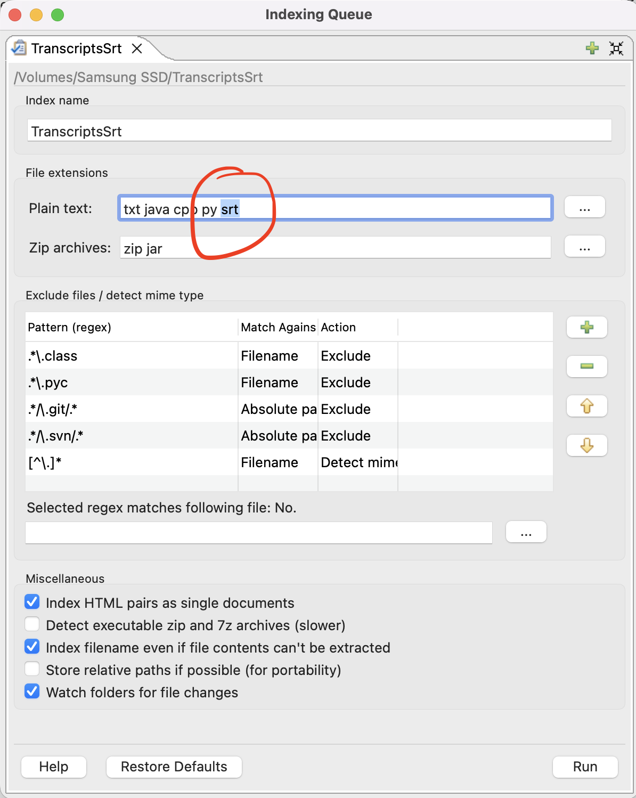

MM Transcripts Change Log and Update Instructions
First, will describe the transcripts update instructions, then the Change Log will be below.
Transcripts Update Instructions
If you have previous transcripts version and would like to update it, you will need to update your index on DocFetcher.
There's a few ways to do it. Can simply repeat the original setup steps but with the new folder(s).
Follow these steps to ensure correctness.
- Open DocFetcher and delete the
MMTranscriptsindex by right clicking on it and selectingRemove Index.- Note: If you created two separate indexes on
TranscriptsTxtandTranscriptsSrt, make sure to remove both of them.
- Note: If you created two separate indexes on
- Close/quit DocFetcher and make sure it is not running.
- Download and unzip the new MMTranscripts archive. (If you haven't already)
- Replace the old MMTranscripts folder with the newly unzipped one.
- Open up DocFetcher, and create a new index on folder, selecting the newly moved
MMTranscriptsfolder. Or selectTranscriptsTxtandTranscriptsSrtseparately. Make sure to addsrtto the Plain text field under File extensions:

- Click run
To verify update, check that newly created path from Change Log shows up. So, for 10/10/26 update, check that the path Facebook & Youtube/Videos/** exists when expanding folders on DocFetcher index.
Change Log
10/10/26
Download link below updated as of 10/10/26.
- Added 34 YouTube video and livestream transcripts from Sept. 2025 until Oct. 2026.
All were added under Facebook & Youtube Subfolders except for Life-Changing Foods Expanded Edition Book Launch Party Medical Medium x Cafe Gratitude videos, which got added to MM Events folder.
Updated/created paths:
- Facebook & Youtube/Livestreams/2025/transcripts
- Facebook & Youtube/Livestreams/2026/transcripts
- Facebook & Youtube/Videos/**
- MM Events
Deleted/moved paths:
- Facebook & Youtube/Youtube Season 1
Decided to move Youtube Season 1 videos under newly created Videos subfolder.
9/21/26 10:32 PM PST
Added two video transcripts:
- Transcript from this interview with Medical Medium and Aaron Alexander: https://www.youtube.com/watch?v=4RILWmr2jm0
- Path: Interviews/transcripts/9-18-26 - Aaron Alexander Interview with Medical Medium - Urgent Message for Humanity
- Transcript from AW's latest live Healing Weapons For Anxiety, Depression, Sleep, Restless Legs And Nerves: https://www.youtube.com/watch?v=9_Ctco9E79g
- Path: Facebook & Youtube/Livestreams/2026/transcripts/9-21-26 - Healing Weapons For Anxiety, Depression, Sleep, Restless Legs And Nerves